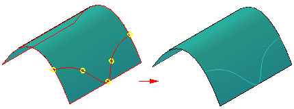
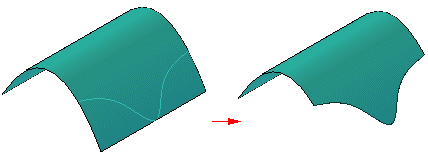
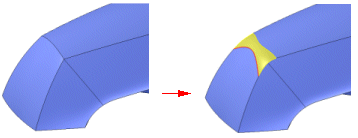

Contour Curve command
Use the Contour Curve command to draw a curve directly on a surface.

You can then use the curve for such things as a border in trimming operations

or as a tangent hold line in rounding operations.

You can select a single face or multiple faces when defining the faces on which you want to draw the curve. You can only draw within the bounded region and the curve will only lie within the bounded region. Curves that fall off the surface or surfaces or traverse trimmed regions are trimmed.
When defining the points for the curve you can use existing points that define the surface, such as vertices, line midpoints, and edges of the surface.
You can add and delete points for the curve to follow and you can drag the points anywhere on the surface.
Tips for creation and manipulation of contour curves.
-
Choose Contour command bar→Draw Points step→Insert Point to insert additional points into the curve. To delete a point from the curve, hold the Shift key and click the point, or right-click the point.
-
You can connect a keypoint and an existing keypoint. To do this, right-click the existing keypoint and select Connect; follow the prompts to identify the other keypoint.
-
You can delete the connect relationships on a keypoint so that you can drag the keypoint on a face. To delete the relationship, right-click the relationship and follow the prompts.
-
You can drag an existing point to a new location on the face.
-
When drawing a curve across faces that are not tangent, you must place a point at the shared edge.